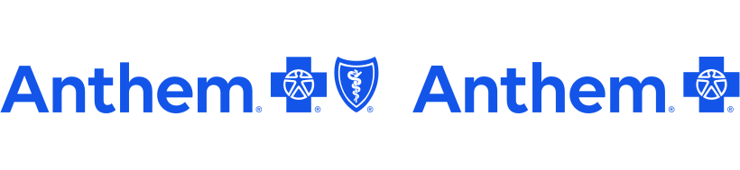

Evidence-Based Care
Treatment recommendations are guided by current medical evidence, thoughtful clinical judgment, and your individual needs.
Evidence-based addiction medicine and mental health care delivered through secure telehealth across Colorado.
Seeking care can feel overwhelming. You may be unsure whether treatment is right for you, worried about withdrawal or returning to use, or simply trying to understand your options.
You do not need to arrive with a perfect plan.
We will listen, help you understand the available choices, and work with you to identify a next step that fits your goals.
Why Atlas Recovery
Treatment recommendations are guided by current medical evidence, thoughtful clinical judgment, and your individual needs.
Addiction and mental health conditions deserve thoughtful care without shame or judgment.
We make decisions with you—not for you—and collaborate with other healthcare professionals when appropriate.
What to Expect
Beginning treatment shouldn't feel confusing. From your first conversation through ongoing care, we'll help guide each step.
Connect with us to discuss your concerns, ask questions, and determine whether Atlas Recovery may be the right fit.
We take time to understand your history, current concerns, strengths, and recovery goals before making recommendations.
Your treatment plan is built around evidence-based medicine, your preferences, and your pace.
Recovery is a process. We continue working together, adjusting treatment as your needs change.
How We Can Help
Care is tailored to your needs, goals, and stage of recovery. Treatment may include medication, psychiatric support, recovery planning, and collaboration with other members of your care team.
Evidence-based treatment for substance use disorders, including medication options and individualized recovery planning.
Psychiatric care for concerns that may affect recovery, functioning, and overall well-being.
Careful medication evaluation, shared decision-making, and ongoing monitoring based on your response and preferences.
Coordination with other healthcare and recovery professionals when collaboration supports safer, more effective care.
Ready to take the next step?
Whether you are seeking care for yourself or supporting someone you care about, we are here to answer questions, discuss your options, and help you determine the next step.
Request an AppointmentOur Philosophy
Our commitment is to provide evidence-based care, clear guidance, and a therapeutic partnership that supports each person's recovery.
Meet Your Provider
I am a board-certified Psychiatric Mental Health Nurse Practitioner specializing in addiction medicine and recovery-focused psychiatric care. Before entering healthcare, my experiences in military and public service shaped my belief in practical support, personal dignity, and the possibility of meaningful change.
Whether you are seeking help for the first time or finding your way back after a setback, you do not have to have everything figured out before reaching out.

For Professionals
We partner with healthcare providers, therapists, hospitals, and recovery organizations to deliver timely, evidence-based addiction treatment through coordinated, patient-centered care.
We value communication and collaboration with referring providers and appreciate the trust you place in us.
Secure referrals take only a few minutes to complete. We review referrals promptly during normal business hours and will contact the patient directly when appropriate.
Submit a Secure ReferralQuestions before referring? We are happy to discuss whether outpatient telehealth treatment is the right fit for your patient.
Insurance & Self-Pay
Atlas Recovery accepts select Colorado insurance plans and also offers straightforward self-pay pricing. You will know the expected cost of your visit before your appointment.
Atlas Recovery is currently in-network with the following insurance plans. Coverage and patient responsibility vary by individual plan.

Behavioral health benefits for eligible Cigna Healthcare members are administered through Evernorth. Additional Colorado plans are being added.
Self-pay appointments are available for patients without insurance or those who prefer not to use their insurance benefits.
Comprehensive 60-minute appointment
Medication management and recovery support
Brief 15-minute screening to discuss fit and next steps
Not sure which option applies to you? Request an appointment and we will help clarify the next step before scheduling your first visit.
Request an AppointmentInsurance participation does not guarantee coverage. Deductibles, copayments, coinsurance, prior authorization requirements, and other benefits are determined by your individual health plan.
Frequently Asked Questions
Starting treatment can raise a lot of questions. Here are answers to some of the ones we hear most often.
Yes. Medication for opioid use disorder is available following an individualized clinical evaluation.
No. Most patients can schedule directly without a referral.
Yes. Atlas Recovery is currently in-network with Anthem, Aetna, and eligible Cigna Healthcare behavioral health plans administered through Evernorth. Additional Colorado plans are being added.
Appointment availability varies, but we strive to schedule new patients as quickly as possible.
Yes. All appointments are provided through secure telehealth for patients located in Colorado.
That's perfectly okay. Schedule a free consultation and we can discuss your concerns, answer questions, and determine whether Atlas Recovery is the right fit.
Yes. Atlas Recovery provides secure telehealth services to patients located throughout Colorado. You must be physically located in Colorado at the time of your appointment.
Yes. Your care is protected by HIPAA and other applicable privacy laws. Information is shared only with your permission or when disclosure is required or permitted by law.